Overview
The layout has three levels joined by a two-track helix. The lowest, the staging level, is finished, wired and used for operating sessions. Everything on this page is on the staging level and the helix.
The layout runs on DCC. The main parts of the electrical system are:
- a TCS CS-105 command station and a TCS B-106 booster;
- six power districts, each with its own circuit breaker or auto-reverser;
- LCOS radio control nodes from Beagle Bay under the layout, which drive the switch machines and read the block detectors;
- JMRI on a Raspberry Pi for the control panels;
- a bridge, built for HART, that connects the LCOS radio network to JMRI.
Every locomotive has a decoder with its own address and follows only the commands sent to that address, so two trains can run at once anywhere on the main line, in either direction, each on its own throttle.
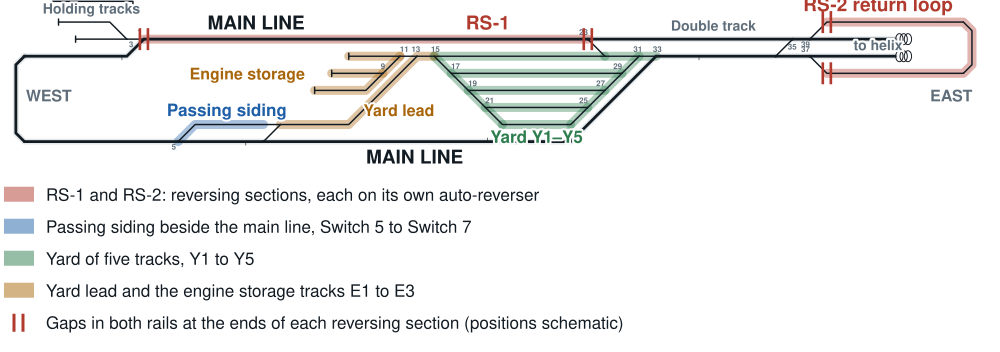
The drawings on this page use short labels. This table matches them to the names on the layout, the panels and the wiring viewer.
| Label | What it is | Name on the layout |
|---|---|---|
| RS-1 | Reversing section 1: the west part of the main line, Switch 1 to Switch 23 | Main West |
| Main line, east | The rest of the main loop | Brick-Plane, East Ext, Main East |
| Double track | The two tracks at the east end | West Ext and East Lead |
| RS-2 | Reversing section 2: the return loop at the east end | K-1 and K-2, the loop at Princess |
| Passing siding | The siding beside the main line, Switch 5 to Switch 7 | Scale, at Plane |
| Yard lead | The track that serves the yard, Switch 7 to Switch 15 | Barn |
| Y1 to Y5 | The five yard tracks | South Yard S-R, S-1, S-2, S-3, S-4 |
| E1 to E3 | The three engine storage tracks | EH-1, EH-2, EH-3 |
| Holding tracks | Two tracks off the main line | W-1 and W-2, West Yard |
| Section | A piece of track with gaps in both rails at both ends and its own feeders and detector | Block |

Power and protection
The command station and booster feed the districts through a set of terminal strips, the booster matrix. Each district has its own protection:
- Districts A to D: one DCC Specialties PSX circuit breaker each. The breaker cuts power within milliseconds of a short and turns it back on when the short is cleared.
- RS-1 and RS-2: an NCE AR10 and a DCC Specialties PSXX-AR auto-reverser. They flip polarity when a train crosses the gap, and shut off if a short lasts.
A short shuts down only its own district, and the board's light shows which one tripped. The command station and booster also have their own short protection. The booster matrix has room for a second booster.
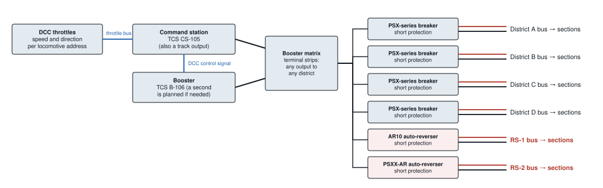

Sections, gaps and feeders
The six power districts are split again into 43 sections. Each section has gaps in both rails at both ends and its own pair of feeders from the district bus (drawing D2). To find a fault, one section's feeders can be disconnected at its terminal strip. The section list has every one.
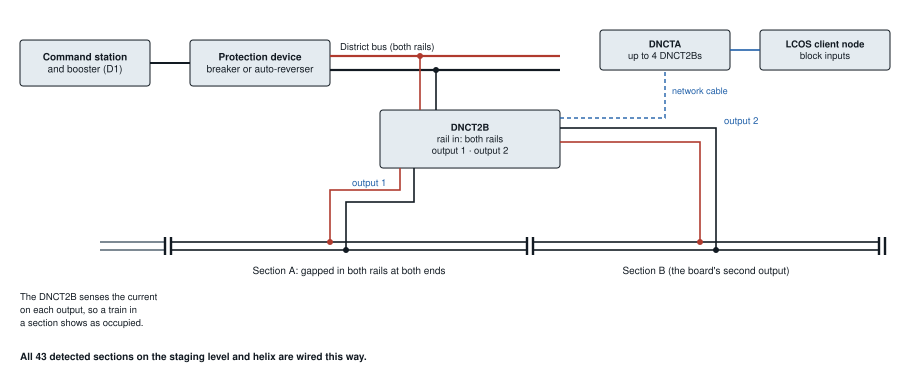

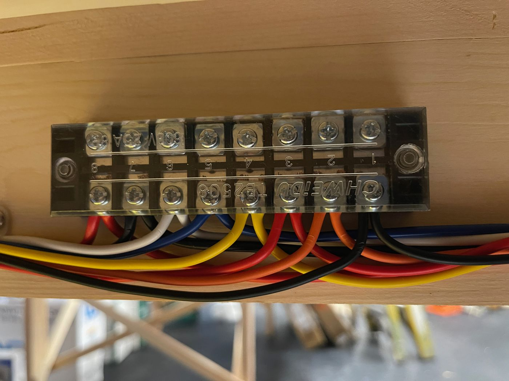

Every terminal strip under the layout uses the same eight positions and wire colors, so any bus or feeder can be traced the same way at every strip.
| Terminal | Carries | Wire color |
|---|---|---|
| 1 | DCC1 + | Red, or green on a secondary bus |
| 2 | DCC1 – | Black, or brown on a secondary bus |
| 3 | DCC2 + | White |
| 4 | DCC2 – | Blue |
| 5 | +12 V (switch machines, accessories) | Yellow |
| 6 | +5 V | Red |
| 7 | +3.3 V | Orange |
| 8 | Ground | Black |
Detection
Every section is detected. A section shows as occupied on the panels when a locomotive, or a car with resistor wheelsets, is on it.
Detection senses current. The district bus feeds both rails into a DNCT2B detector's rail input. The DNCT2B has two outputs, and each one feeds the feeders of one section, so the detector sees any current drawn in that section. Each DNCT2B plugs into a DNCTA by network cable, and one DNCTA connects up to four DNCT2Bs to the nearby LCOS client node, which reports each section as occupied or clear (drawing D2).


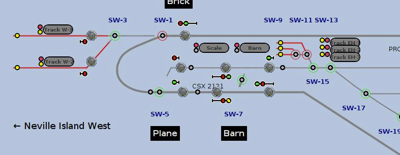
Turnouts and crossovers
Every turnout on the staging level is a Peco turnout with a powered frog, thrown by an MTB MP4 slow-motion switch machine under the layout. The MP4 has two built-in SPDT contacts that move with the points (drawing D3):
- Contact 1 powers the frog. It connects the frog to whichever stock rail the points are against, so the frog always has the right polarity. Both frog rails are gapped past the frog.
- Contact 2 reports which way the turnout is set.
The switch machine runs off a 12 V output on the nearby LCOS node, so a turnout can be thrown from the fascia button, a DCC throttle or the computer.
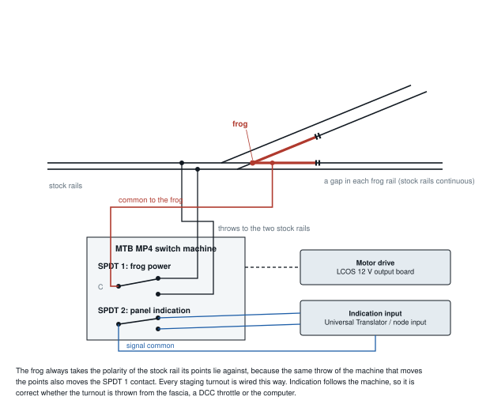
Each turnout shows its position in two places, both driven by contact 2, so they show where the points really are however the turnout was thrown:
- On the fascia, the turnout's Touch Toggle button lights, through a Touch Toggle Universal Translator. A framed track diagram on the fascia also has a light at each of its turnouts.
- On the panels in JMRI, each switch shows normal or reverse. An LCOS input board reads the same contact.


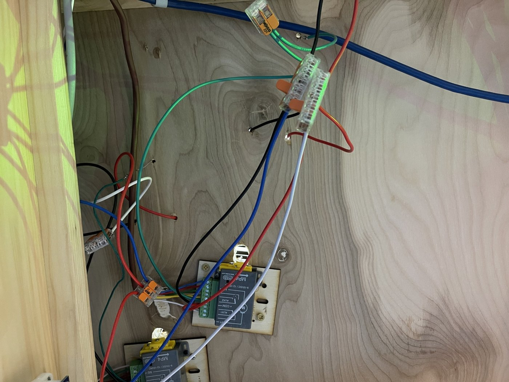


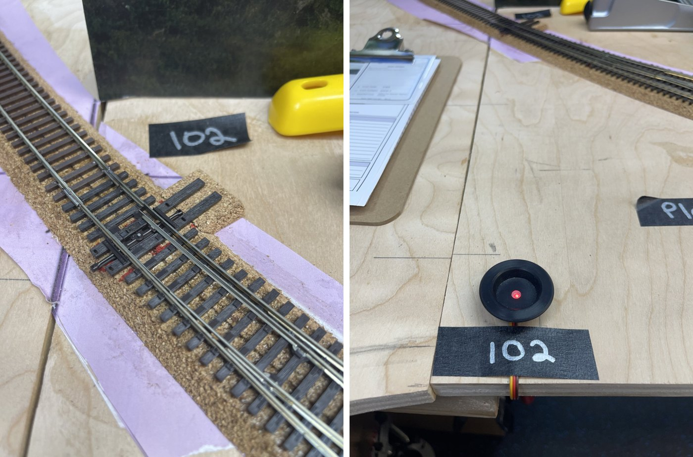
There are crossovers at Switches 7, 23 and 35. Each is two turnouts wired like any other, and both machines throw together. Each frog has its own polarity, so both rails between the two frogs are gapped, and each half is its own detected section (drawing D4).
The two halves share one pair of position inputs on the node. Their position contacts are wired in series, so the panel shows normal only when both halves are normal and reverse only when both are reverse. If the halves disagree, neither light comes on and JMRI shows the crossover as inconsistent.
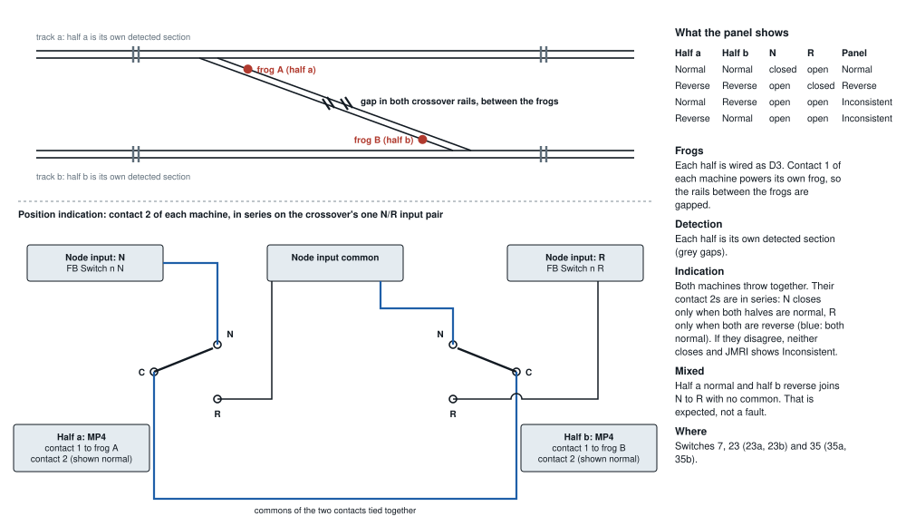

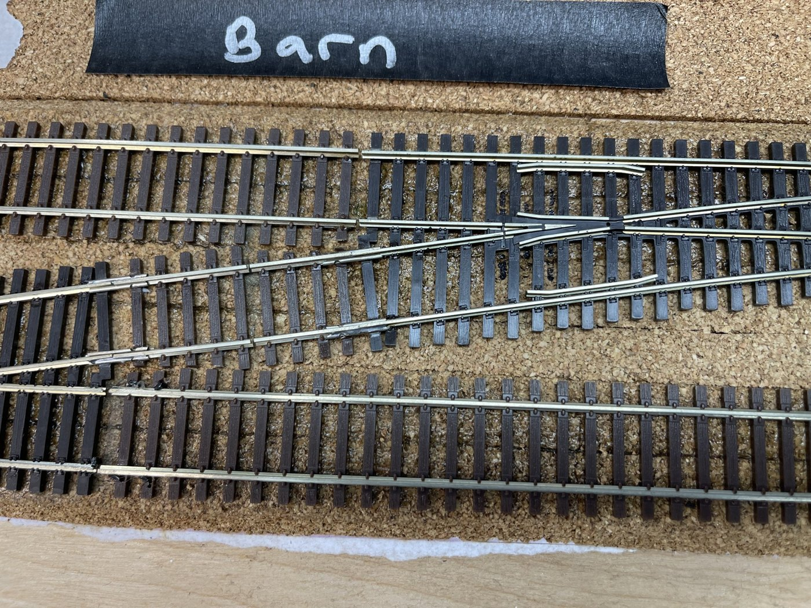

Reversing sections
At the east end of the main line is a return loop, RS-2 (plan P2). A train goes out on one track, around the loop, and comes back on the other facing the other way. The loop is powered through a DCC Specialties PSXX-AR auto-reverser. It is two detected sections on the two outputs of one DNCT2B, and because both get power from the one auto-reverser they change polarity together, so for wiring and troubleshooting they are one reversing section.
The main line also loops back on itself at the west end, so its west part, RS-1, is a second reversing section, wired the same way on an NCE AR10. RS-1 is 217 in long, longer than any train on the level.
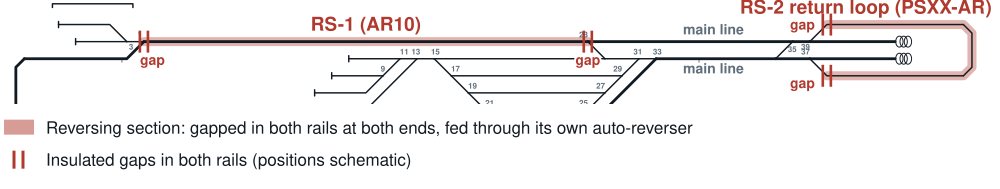
Each reversing section has gaps in both rails at both ends. The auto-reverser's output feeds the rail input of a DNCT2B, and the DNCT2B's outputs feed the track, so the reversing sections are detected like every other section. When a train's wheels bridge a gap with the wrong polarity, the auto-reverser senses the short and flips the section's polarity in a few milliseconds, and the train keeps going. Each section is longer than the longest train, so the flip finishes before the train reaches the far gap.
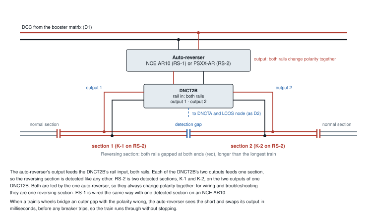

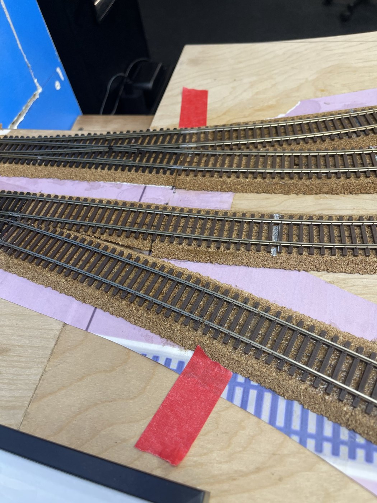

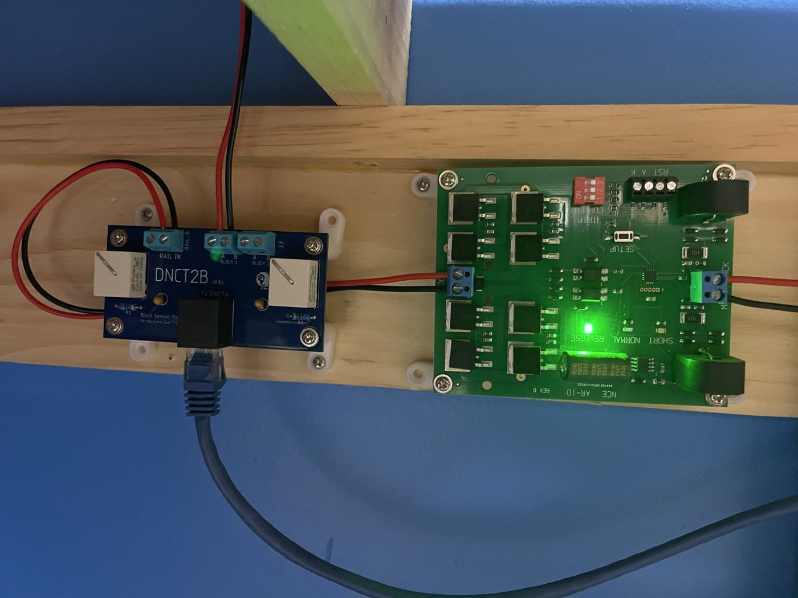

Passing siding, yard and engine storage
The passing siding runs beside the main line from Switch 5 to Switch 7 (plan P3). It is 145 in long, room for about 19 cars of 50 ft, and joins the main line at both ends, so one train can wait on the siding while another passes on the main.
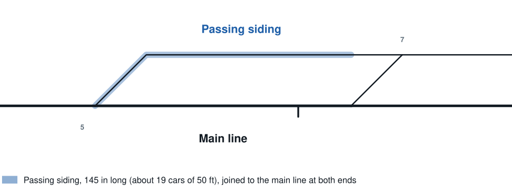
The yard has five tracks, Y1 to Y5, from about 141 to 231 in long (plan P4). A switcher works the yard from the yard lead, which leaves the main line at Switch 7 and runs on its own track to the yard ladder, so trains keep running on the main line while the yard is switched.
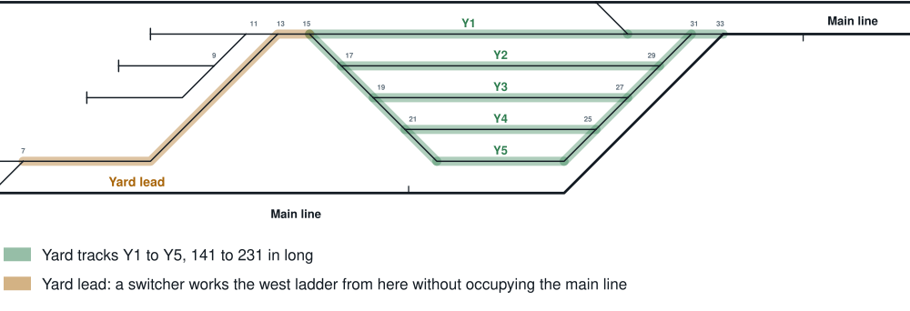
Three engine storage tracks, E1 to E3, branch off the yard lead at Switches 9 and 11 (plan P5). Each holds at least one locomotive.


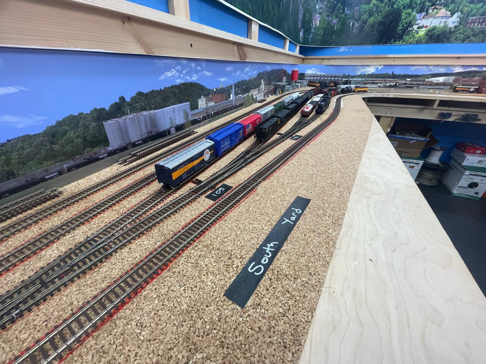
The computer link
The LCOS nodes under the layout talk to each other by radio. Each node is an Arduino Nano with an nRF24L01 radio. LCOS has no connection to JMRI of its own, so HART has a bridge in two parts (drawing D6):
- The bridge node: an LCOS node running HART's own C++ firmware. It joins the radio network and listens for events from the other nodes: a turnout moved, a section became occupied or clear, a button was pressed. It sends each event to the PC over USB as one line of text, and takes commands from the PC, such as "throw turnout 1308", and sends them by radio to the right node.
- The bridge program: a Python program on the PC. It passes each line from the node to an MQTT message server, and each command from the server back to the node.
JMRI has a built-in MQTT connection, so every LCOS turnout, sensor and signal shows up in JMRI as a normal turnout, sensor or signal. The address is the node number and the device number: turnout 1308 is turnout 8 on node 13, and the line track/turnout/1308 THROWN means that turnout has thrown.
The program checks the USB link about every 12 seconds and reconnects if it stops answering. After the layout power is turned off and on, it tells the node to sign up for events again, and it reports whether the link is up so the panels can show it. The code is open source on GitHub: LCOS_ESP32_MQTT_Client. LCOS and the Arduino bridge has more.
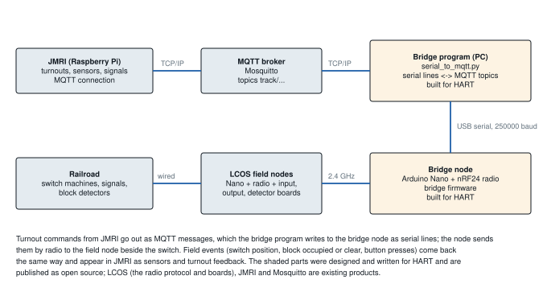


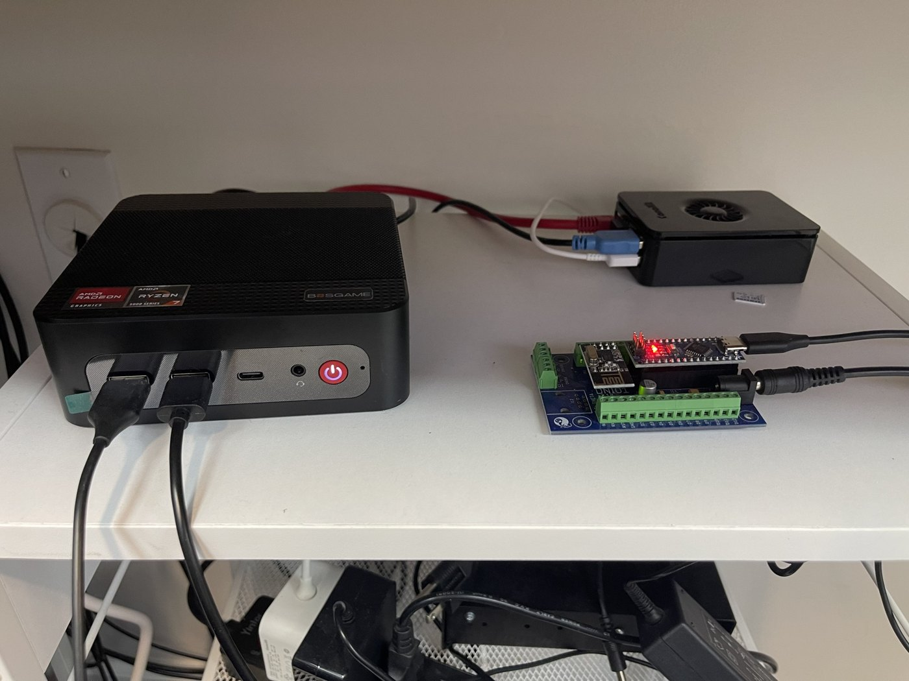
MQTT RX turnout cmd topic='track/cmd/turnout/1308' qos=1 retain=False raw_bytes=b'THROWN' MQTT turnout queued for serial: 'track/cmd/turnout/1308 THROWN' MQTT -> serial b'track/cmd/turnout/1308 THROWN\n' ACK track/cmd/turnout/1308 THROWN TX -> track/turnout/1308 THROWN TX -> track/sensor/1367 INACTIVE TX -> track/sensor/1368 ACTIVE TX -> track/sensor/1368 ACTIVE MQTT RX turnout cmd topic='track/cmd/turnout/1308' qos=1 retain=False raw_bytes=b'CLOSED' MQTT turnout queued for serial: 'track/cmd/turnout/1308 CLOSED' MQTT -> serial b'track/cmd/turnout/1308 CLOSED\n' ACK track/cmd/turnout/1308 CLOSED TX -> track/turnout/1308 CLOSED TX -> track/sensor/1367 ACTIVE TX -> track/sensor/1368 INACTIVE TX -> track/sensor/1368 INACTIVE
JMRI also runs the signals and the CATS dispatcher panel from the same turnouts and sensors: how the signals work.
Radio nodes
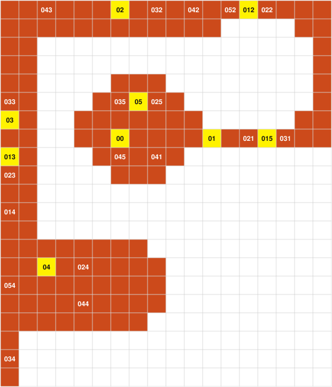
Pin-by-pin wiring for every node is in the wiring viewer.
Section list
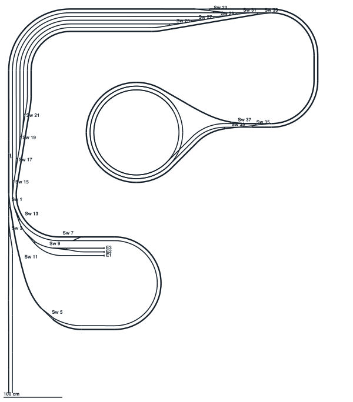
Every detected section on the staging level and the helix, wired as in drawing D2. "Node · ch" is the LCOS node and detector channel. Lengths marked ≈ are estimates.
| No. | Section | Layout name | Node · ch | Length, in |
|---|---|---|---|---|
| 1 | Return loop RS-2 | K-1 | C1 · 1 | 124 |
| 2 | Return loop RS-2 | K-2 | C1 · 2 | 114 |
| 3 | Turnout 37 | OS Switch 37 | C1 · 3 | 16 |
| 4 | Turnout 39 | OS Switch 39 | C1 · 4 | 10 |
| 5 | Turnout 35 (crossover half b) | OS Switch 35b | C1 · 5 | 20 |
| 6 | Turnout 35 (crossover half a) | OS Switch 35a | C1 · 6 | 15 |
| 7 | Double-track section | East Lead | C1 · 7 | 104 |
| 8 | Double-track section | West Ext | C1 · 8 | 156 |
| 9 | Main line (west), RS-1 | Main West | C2 · 1 | 217 |
| 10 | Main line (east) | Main East | C2 · 3 | 315 |
| 11 | Yard track Y5 | S-4 | C2 · 4 | ≈ 141 |
| 12 | Yard track Y4 | S-3 | C2 · 5 | ≈ 145 |
| 13 | Yard track Y3 | S-2 | C2 · 6 | ≈ 178 |
| 14 | Yard track Y2 | S-1 | C2 · 7 | ≈ 212 |
| 15 | Yard track Y1 | S-R | C2 · 8 | ≈ 231 |
| 16 | Turnout 13 | OS Switch 13 | C3 · 1 | 18 |
| 17 | Turnout 15 | OS Switch 15 | C3 · 2 | 18 |
| 18 | Turnout 17 | OS Switch 17 | C3 · 3 | ≈ 15 |
| 19 | Turnout 19 | OS Switch 19 | C3 · 5 | ≈ 15 |
| 20 | Turnout 21 | OS Switch 21 | C3 · 7 | ≈ 9 |
| 21 | Turnout 3 | OS Switch 3 | C4 · 1 | ≈ 14 |
| 22 | Turnout 1 | OS Switch 1 | C4 · 2 | 23 |
| 23 | Holding track | W-2 | C4 · 3 | ≈ 105 |
| 24 | Holding track | W-1 | C4 · 4 | ≈ 105 |
| 25 | Turnout 5 | OS Switch 5 | C4 · 5 | 25 |
| 26 | Main line (east) | Brick-Plane | C4 · 6 | 58 |
| 27 | Main line beside the passing siding | East Ext | C4 · 7 | 141 |
| 28 | Passing siding | Scale | C4 · 8 | 145 |
| 29 | Turnout 25 | OS Switch 25 | C12 · 1 | ≈ 15 |
| 30 | Turnout 27 | OS Switch 27 | C12 · 3 | ≈ 15 |
| 31 | Turnout 23 (crossover half a) | OS Switch 23a | C12 · 4 | 24 |
| 32 | Turnout 29 | OS Switch 29 | C12 · 5 | ≈ 15 |
| 33 | Turnout 23 (crossover half b) | OS Switch 23b | C12 · 6 | ≈ 9 |
| 34 | Turnout 31 | OS Switch 31 | C12 · 7 | ≈ 20 |
| 35 | Turnout 33 | OS Switch 33 | C12 · 8 | 12 |
| 36 | Yard lead | Barn | C13 · 1 | 34 |
| 37 | Turnout 11 | OS Switch 11 | C13 · 2 | ≈ 22 |
| 38 | Turnout 7 | OS Switch 7 | C13 · 3 | ≈ 9 |
| 39 | Turnout 7 (crossover half b) | OS Switch 7b | C13 · 4 | 9 |
| 40 | Engine storage E3 | EH-3 | C13 · 5 | ≈ 30 |
| 41 | Engine storage E2 | EH-2 | C13 · 6 | ≈ 30 |
| 42 | Engine storage E1 | EH-1 | C13 · 7 | ≈ 51 |
| 43 | Turnout 9 | OS Switch 9 | C13 · 8 | ≈ 20 |
Parts
| Part | Maker | Used for |
|---|---|---|
| CS-105 command station | TCS | DCC command station |
| B-106 booster | TCS | Track power |
| PSX circuit breakers | DCC Specialties | Districts A to D |
| AR10 auto-reverser | NCE | RS-1 |
| PSXX-AR auto-reverser | DCC Specialties | RS-2 |
| Turnouts | Peco | All turnouts and crossovers |
| MP4 switch machines | MTB | Throwing turnouts, frog power, position contact |
| Touch Toggles, Universal Translator | Berrett Hill | Fascia buttons and lights |
| LCOS nodes and boards | Beagle Bay | Switch machine outputs, inputs |
| DNCT2B detectors, DNCTA | Beagle Bay | Block detection (DNCT2B, two sections each); linking up to four DNCT2Bs to a node (DNCTA) |
| Arduino Nano, nRF24L01 radio | Arduino; various | Bridge node |
| Raspberry Pi | Raspberry Pi Ltd | Runs JMRI and the MQTT server |
| JMRI, Mosquitto | Free software | Panels; MQTT server |
More: Wiring viewer · LCOS and the Arduino bridge · How the signals work · Track plan